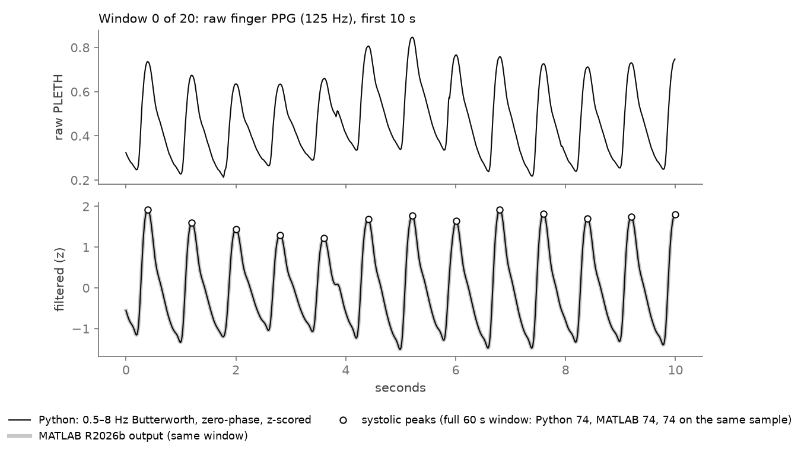
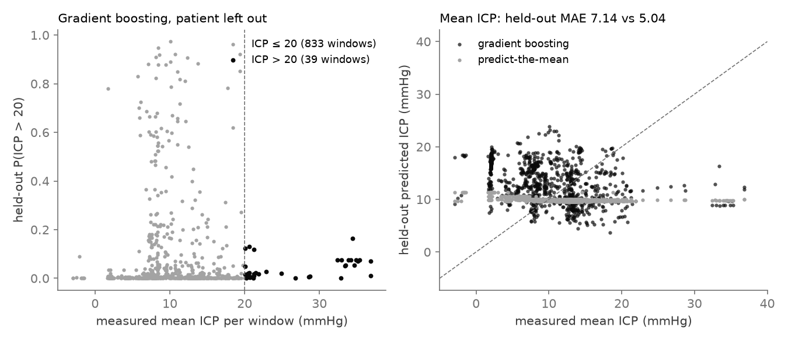

Finger PPG and ECG from the MIMIC-III Waveform Database, invasive intracranial pressure as ground truth, physiology-based features, and every model scored only on held-out patients. The answer is: a little for raised ICP, not at all for the pressure value.
Intracranial pressure is monitored with a sensor placed through the skull, so only the sickest patients get it. Photoplethysmography (PPG), the light-based pulse signal from a finger clip, is almost always recorded. If its waveform carried enough information about ICP, a cheap, non-invasive warning for raised ICP would be possible.
Rising ICP triggers the Cushing response: higher arterial pressure and sympathetic tone. That should shorten pulse transit time and change the shape of the finger pulse.
ICP level differs mostly between patients. A model that saw a patient in training can score well just by recognising the patient, not by reading pressure.
Whether PPG features predict a new patient's ICP, with every patient held out once.
A medical device or a clinical claim. It is a small, honest feasibility check on open data.
Invasive ICP recorded at 125 Hz alongside the PPG and ECG lead II in the same record.
Layout headers of 8,334 of 22,317 matched records were scanned for PPG, ECG lead II and ICP together. Twenty-five subjects had all three; at most two hours each were streamed from PhysioNet and cut into 60-second windows.
Zero-phase Butterworth band-pass (PPG 0.5–8 Hz, ECG 5–30 Hz), z-scoring, ECG R-peaks, PPG feet and peaks. Beats must correlate at least 0.9 with the window's median beat. Flat, missing, clipped or noisy windows are rejected.
Pulse transit time, pulse amplitude, rise time, width at half height, heart rate, beat-to-beat variability and FFT harmonic ratios. Each has a written physiological reason it could move with ICP.
Predict-the-mean, ridge and logistic regression, gradient boosting, and a 1D CNN on raw PPG. A patient is never in train and test at once, enforced by an assert and a test. Intervals are bootstrapped over patients.
Predict-the-mean is the bar a model must clear.
The gap shows how much of a fit is patient-specific.
The filter and peak detector were re-written in MATLAB and compared sample by sample.
Ten patients with at least ten clean windows, 872 windows in all. Only 39 windows are above 20 mmHg, from 6 patients, so every interval is wide.
AUROC, 0 to 1. Held-out = pooled predictions on the patient left out.
Mean absolute error in mmHg, lower is better. Bar length to 10 mmHg.
| Measure | Result | Reading |
|---|---|---|
| ICP > 22 mmHg, held-out AUROC (sensitivity check) | 0.87 · 0.74 | logistic · boosting; 19 windows, intervals 0.48–1.00 and 0.13–0.98 |
| Pulse transit time vs ICP, pooled Spearman ρ | 0.01 | physiology predicts a negative link |
| Median within-patient ρ | −0.08 | negative in 6 of 9 patients |
| Filtered PPG, MATLAB R2026b vs Python | 1.97e-06 | max difference on 20 windows; Octave 10.3.0: 7.97e-07 |
| Systolic peaks on the same sample | 2,090 | of 2,090, in MATLAB and in Octave |

results/matlab_windows.csv). Below: the Python filter in black over the MATLAB R2026b output in grey, with detected systolic peaks; in this 60-second window both find 74 peaks on the same samples. Drawn by scripts/make_demo_figures.py.
results/oof_predictions.csv. Left: windows above 20 mmHg rank somewhat higher, but their predicted probabilities stay low. Right: predict-the-mean stays near 10 mmHg; gradient boosting spreads its predictions without following measured ICP, so its error is larger.Many candidate subjects had zero to three usable windows. Twelve had enough overlap; ten kept at least ten windows after quality checks.
Two subjects show long flat stretches with zero variation, a placeholder value rather than physiology. A flat-ICP rule removes them; 244 windows were rejected for it.
SciPy's filtfilt pads 3·nfilt samples, MATLAB 3·(nfilt−1). The edge difference was 0.27 until the pad length was matched; now it is about one in a million.
Gradient boosting scores 1.00 AUROC on training patients and 0.72 on the one left out. On the pressure value, nothing beats the mean.
Ten patients and 39 hypertensive windows. Finger PPG reflects the systemic circulation, not the brain; forehead near-infrared PPG is not in this data. Only part of the matched subset was scanned. Pooled AUROC also rewards ranking patients against each other.
Scan the rest of the matched subset for more patients, add dicrotic-notch and augmentation features, model within-patient change in ICP rather than its level, and explain the boosting model with SHAP.
git clone https://github.com/dheepakkaran/ppg-icp-estimation.git cd ppg-icp-estimation make reproduce # uv env, fetch, features, tests, models, Octave check, RESULTS.md make test # 4 checks: filters, beats, no patient in train and test uv run --with matplotlib python scripts/make_demo_figures.py